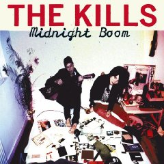

|
With an aggressive name and an aggressive sound, the Kills look to shake things up for the audience. They like to sing about being mean, tough, and nasty. That's their shtick and they do it well. This was my first introduction to the band. They have two earlier albums which both appear to have the same type of messaging. Never have the words "cheerful", "safe", and "straight" been given such a bad rap. You can just envision singer Alison VV Mosshart coughing like she does at the start of the song, unimpressed as you approach her in a seedy dive bar. One look at you, and she's made her assessment - "boring". Thirteenth song? Coincidence? I think not. The best compliment I can give them is that they sound British. |
 |